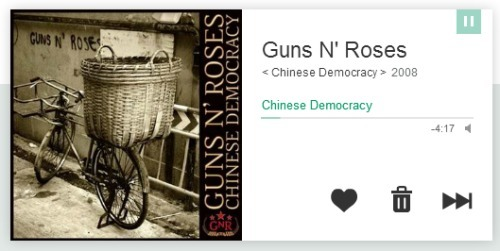
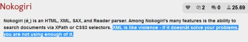
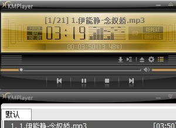
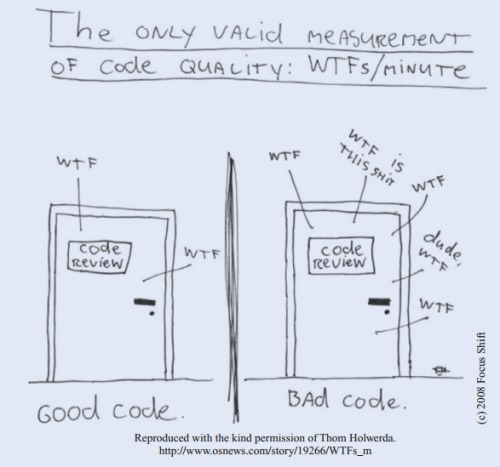
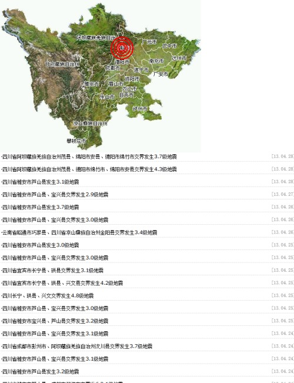

笑cry
结束啦结束啦
之前的qq报版本过低不给上线了，下了个7.0尼玛各种弹窗，关的时候还老给我跳出一个让下手机版，，艹了，怒而找了个international，干净许多，不过不显示是电脑登陆还是手机登陆了../fd
记得绿罗裙，处处怜芳草
有些想写出来的文字觉得放说说还是不合适，那边儿人的心态都太社交了，还是放这里罢
PS：上面那句诗是看朱光潜的《给青年的十二封信》时碰到的，好长一篇谈“美”的
PPS：书是狼王给推荐的
夭寿啊，yyys肿么也带rap...
Mosquito 里的 Buried Alive
http://www.bilibili.com/video/av1532583/index_2.html
请赐予我乳腺癌与肺癌的力量 /kb
看上去不错的样子，，用JS，没准可以借鉴借鉴
2014-09-27 15:20:34
豆瓣都听疲劳了，跑去听大门的《the end》，，迷幻的非常有感觉啊
他们的歌能让人闻到味道——恩，像狼王以前说的，烟味

我擦哦，枪花还唱过这歌？
感冒了..
有无数的读者，在来信里对我说——“三毛，你是一个如此乐观的人，我真不知道你怎样凡事都愉快。”
我想，我能答复我读者的只有一点，“我不是一个乐观的人。”
乐观和悲观，都流于不切实际。一件明明没有希望的事情，如果乐观地去处理，在我，就是失之于天真，这更悲观是一样的不正确，甚而更坏
点32个赞
那就幸福无已
自然，知道那也只会是打了鸡血的一段里
读到一半的时候还挺好玩的，，像在戏里，像活在一个故事里；短的，那个戏的世界就要蒸发掉，，像梦
在你独自一个人时想像你至高无上，在你小心地避开任何负担时自以为强壮有力，那当然是很容易的。
from 《第二性》第十章
男人们一直把毕达哥拉斯的善恶对立说当做自己的传统采用，蒙特朗便属于这个悠久的传统。他追随尼采，坚持认为，只有萎靡不振的时代才颂扬“永恒的女性”，英雄男儿应该奋起反抗“伟大的母亲”。这位精通英雄主义的专家扬言要派夺女人的权力。因为女人是黑夜、混乱和被限制的存在。在《超越女人》一书中谈到托尔斯泰夫人时他叫嚷：“这些动乱的影子什么也不是，只是纯粹的女性。”在他看来，用堂堂的正气补足女性的贫乏，简直是当今男人们的愚蠢和卑劣。为了宣扬文人缺乏逻辑，固执而无知，没有把握现实的能力，人们便常常提到她们的本能、直觉和神秘的预感。说她们事实上既非观察家，也非心理学家；既不会观察事物，也不能理解有生命的存在；她们的奥秘是陷阱和欺骗，她们那不可穷尽的宝藏是虚无的深渊；她们不能给予男人任何东西，只能使他受损。对蒙特朗来说，强大的敌人首先是母亲。在一部早年发表的作品《流亡》中，他描写了一个阻挠其儿子订婚的母亲；在《奥林匹克运动会》中，一个献身体育运动的少年由于他母亲的胆小和自私而遇到了障碍；在《独身者》和《沙女们》两书中，母亲都被描绘成可惜的人物。母亲的罪恶便是想把儿子永远封存在她那幽暗的体内；她摧残儿子，为的就是能把他完全保留给自己，从而填充地的存在中那贫瘠的空虚。她是一个最可悲的老师，扼杀孩子的生气，拉他的后腿，使他远远离开他立志要攀登的顶峰，最终变成愚蠢和卑劣的人。
以上的抱怨并非毫无根据。但是，透过蒙特朗横加在母亲这种女性身上的许多明显指责，可以明显地看出，他对她所厌恶的就是他的出生这一事实。他相信自己是上帝，他想成为上帝；就因为他是男性，是‘优越的男人”，因为他是蒙特朗。神可不是被生出来的存在，如果她有躯体，那躯体就是在坚硬而受过训练的肌肉中铸成的意志，而非昏昏庸庸受生死宰割的一堆肉；他认为母亲应为这个容易腐朽的、脆弱的、偶然的和他自己不承认的肉体负责。在《烧越女人》一书中，蒙特朗说：“阿基里斯（Achilles）身上唯一致命的地方就是他母亲所捏的脚踏。”他一直不愿接受人活在世上所应有的各种条件，他引以为豪的始终是惶恐地从冒险中逃走，不去面对以血肉之躯与这个世界牵连的自由存在；他拒绝这种牵扯，同时又声称他有权肯定他的自由；没有牵挂，没有根基，他幻想自己是一个极为自足的主观存在；但一想到他的肉身凡胎，他便打消了梦想，于是在他惯于采用的程序中寻找躲避：不是上升到他的根源之上，而是诋毁它。
对蒙特朗来说，情妇也像母亲一样不祥；她阻止男人复活其内心的神。他宣称，女人的命运就是直接的生存；他凭着感觉生活，陷入了有限的存在，她有生存的热望，而且希望把男人也限制在这样贫困的状况中。他感觉不到他那股子超越的冲动，她没有崇高感，她爱她的情人是喜欢他软弱而非顽强，是欣赏他的受罪而非他的快乐，她想让他解除武装，让他不快乐，以至希望使他相信他并非像被证实的那样不幸。他超过了她，从而逃避了她；但是她知道如何改变他的大小，以便将他置于控制之下。因为她需要他，她并不能自给自足，而是一个寄生虫。在《梦》这”本书中，通过多米尼克的眼睛，蒙特朗展现了拉亲拉的妇女“挽着情人的手臂游荡，她们弱不禁风，活像披着人皮的大蜗牛”。在他看来，除了女运动员，女人都是不健全的，她们生来就是软弱无力，奴性十足，她们掌握不了世界，因此竭力占有一个情人，或最好占有一个丈夫。蒙特朗不可能运用有关“螳螂”的神话，但他表达了它的内容：对女人来说，爱就是吞没，在假装给予的同时攫取之，他引托尔斯泰夫人的呐喊口：“我以他为命，为他而活，我要求他也像我对待他一样来对待我。”同时，他还描绘了这种可爱的愤慨的危险；他在埃克莱夏蒂斯的格言中找到了一句可怕的实话：“一个咒你的男人也胜似一个祝福你的女人。”他弓！证马沙尔·目奥蒂的体验日：“我的男子汉一结婚就变成了半个男人。”他认为结婚对“优越的男人”极为不祥。你完全可以想像，像“埃斯屈路斯太太”或“我将同丹特士一同进餐”之类的活该是何等的装腔作势。结婚削弱了堂堂男子汉的威望，总而言之，它破坏了英雄的有意味的孤独；他“需要在他的思考中不挨打”。我已经说过，蒙特朗选择了一种没有对象的自由；这就是说，他喜欢虚幻的自主胜过在世间采取行动的真正自由；他这种摆脱责任的态度就是为了抗拒女性；她十分沉重，不堪负担。“男人被他所爱的女人挽住手臂，以至不能挺胸昂首地走路，这本身就是一个明显的象征”；“我满怀热情，她给我泼凉水。我正在涉水，她抓住我的胳膊，拖得我落了水”民既然她只是贫乏和空虚，既然她的逻辑是幻觉，她怎么能有这么大的力量呢？蒙特朗并未解释。他只是傲慢地说：“一个狮子完全有理由害怕蚊子。”答案很清楚：在你独自一个人时想像你至高无上，在你小心地避开任何负担时自以为强壮有力，那当然是很容易的。
sail
恩，许久未来

屌炸天...

忽起初忆
渐入佳境，，呃，我说看《Clean Code》
刚瞅到switch就自觉想起今天那些参数类的设计，凭直觉已经不错了，知道用polymorphism，但还是留了点尾巴——读取xml文件时根据tag type的不同而switch去new各种类
明儿也许去了就把最后这点loose end tie掉——但，工程实践不同于理想游戏，，这周的活得做完，可能前提就是代码无法太完美
不急的，叫做慢慢来
Twisted略看不下去，想着还是以任务驱动来做这些applicational的学习吧
跑去看Clean Code，顺便惊闻一张神图：

“...pretty much what you expected”，便想到前些日子写的那个BPEL生成程序，30行python代码
每个函数干嘛都很明确，怎么干也很直观，，简单到“不可思议”（夸张了）——那么一件“复杂”的事，怎么可以用这么简单的一些代码实现出来？
mark这个其实是想回答以前看过的面试会问到的一个问题：“你自己写过的印象最深的一段代码？”
截至目前，就是这个
“Try and leave this world a little better than you found it.”
http://www.yinwang.org/blog-cn/2013/04/20/editor-ide/
一直以来有想到却不太敢说的想法
对，重构！重构啊魂淡 @vim @emacs
看到AST，表示对自己IDE（最早想的确实只是个类vim的编辑器）的欲望又重燃了
to put yourself at an unjudgeable position,
one way or another..
其实心里是不想找实习的，更愿意这最后无虑自由的一年（恐怕多半年）去做几个自己想做的东西，或补上之前没有刻意的若干工作需求的专业部分
但还是先探情报，，总趋于更多了解situation之后行动
——昨晚躺床上想的几句文字，这时候码来写不下去了
且看几篇毕业工作的有关，发觉说是下半年的招聘已经是补漏了，，so~~~``
——“死都不怕，还怕什么？”
不对，“不怕死不等于什么都不怕”，，贞洁烈女怕不怕死？不怕，既然死都不怕，为什么还怕失去贞操？
这就是个“所欲有甚于生者”的问题，可惜太多人还是倾心比较级，比如“修身齐家治国平天下”，“一屋不扫何以扫天下”，“家人都不爱，还怎么爱朋友”
恩，就只说明白一东西，是爸一直来的那些价值碎片，总想不到有力的反驳，这次是看《犬儒病》里找到一个，且为mark
已经不再习惯用文字记录记忆
暂就这么放了吧
今天看到的那树影，和红的月亮
又想到那铁轨
特么这是在写诗么？
“我只是被灌醉的小丑 不停歌唱”
拉了一堆流行歌来学，，却还是被《爱情的枪》唱哭
我老了，或我走了
远处的人们拉不住
“与其苟延残喘 不如纵(cong)情(rong)燃烧”
唔...
只是扯着嗓子吼了会儿gala
看多了社会就觉着疲乏，这还是知乎上的而不是说说微博上的社会
后者有夸张和荒诞感，，前者么，有人说赵括纸上谈兵，还有人说蔡伦什么年代的，赵括连纸都没见过
元芳你怎么看
“一个沙漠旅行者用一支手表去换取别人的一杯水，这个交易不符合马克思说的等价交换，因此被视为不公正。其实这不是不公正。边际效用论要比劳动价值论正确得多。”
胡平《犬儒病》里的，
当初看资本论的时候就也对劳动价值的概念疑惑：一个聪明人用更省力的办法完成了一个普通人需要更多劳动才能完成的产品，前者就比后者更低价么？
慢慢来，可能一生无以了解世界的一部分，，可总在走着
中午吃饭看到碗里打的两个蛋，跟妈说“你说如果人类也是下蛋的，会不会吃自己的蛋”
妈说会吧，你要把鸡蛋加到鸡饲料里它们也吃
我说不是这回事，人肉不知情加饭里人还吃呢
妈说，哦
我说，应该是吃，因为有未受精卵，，但是比方就有这种，犯罪分子吃已受精的蛋，刑法判定为杀人罪
妈说，那人家说他们吃的时候又不知道
我说，可是构成事实犯罪啊
妈说，你想的这些稀奇古怪的东西
在看的书：
P 布洛赫《封建社会》
P 金庸《鹿鼎记》
P 侯捷《深入浅出MFC》2013.10.14
Robert C. Martin 《Clean Code: A Handbook of Agile Software Craftsmanship》 2013.11.10
《Real World Haskell》 2013.11.13
想看的书：
薛定谔《生命是什么》
鲁迅
《三国演义》
《红楼梦》
《想象的共同体》
《官场现形记》
《牛虻》
《古拉格群岛》
看过的书：
杨绛《我们仨》 2013.8.31
胡平《犬儒病》 2013.8.29
吴清源《中的精神》 2013.8.5
李志绥《毛泽东私人医生回忆录》 2013.7.21
上帝掷骰子吗-量子物理史话 (2013.6.29)
三体X (2013.5.20)
童年的终结 (2013.5.19)
全球通史 (2013.3.2)
人间失格 (2012.11.23)
女生徒 (2012.11.8)
marks：
《共产党宣言》
《资本论》
三毛
恩格斯《自然辩证法》
恩格斯《社会主义——从空想到科学》
《西厢记》
《二十四史》
《说文解字》
明儿TP，施法前摇20小时
之前在inappro倾泻ss的设定，沉静下来这几天潜意识里咀嚼和把玩，，
脑子里断断续续琢磨着有关天人的一些意象，
某时忽然就有点能尝出克拉克那些小说的那种味道了，，童年的终结、与拉玛相会等等里藐视人本位的大刀阔斧的forward节奏，无视细节的爬升的世界观
不过今儿看2001还是没欣赏进去，虽然开篇的猿人们伴着查拉图斯特拉如是说看得自己热泪盈眶
恩，一度比较烦隐喻，，不能直面传达的绕弯行为都是耍流氓
但传达毕竟又要是要求接收方结构的匹配，，
对那个梦想中或称理想中宏大的故事魂牵梦萦
其实我不怎么会说话了这会儿
12:04 2013/6/24
看高数，听着卡奇社，外面下雨，忽然就感觉触摸到了似乎曾经有过而又好像没有在未来大约不会有的儿童般的喜悦，提笔即逝。
http://www.douban.com/note/132689846/
mark大刘关于科幻硬伤的一篇讨论
恩，挺帅的
在《三体3》的情节跋涉中思索事件的光速传播挺有意思，
“万有引力”号发出广播是威慑纪元结束时，三体舰队从太阳系撤退是一年后，，
引力波从奥尔特星云传回地球用了一年的时间
但万有引力号启动广播与执剑人交接是近乎同时的事情——因为水滴接到的是一个定时的指令
距离呵
之前的印象里二维化呈现一种无限恐怖的吞噬状态，，但仔细想想，在宇宙尺度的空间距离上，也许那只是种仿佛土地沙化的未来事件吧
真心地还是想给人推荐这套书，不过也真心地知道不必和无谓
我就自己咀嚼和品尝吧，，和还要在也许未来几年十几年的时间里一沙一粒地去构建“三生”的世界
会很有趣的，，简直像幸福了，
嗯
http://tv.cntv.cn/video/C14129/396f9e21a04c40c8846a88a1d4f29b46
还没看完，但张绍刚拿着《自私的基因》说“这是社科。。把科字去掉 ，社会学”云云的时候，已然可以判定：
这厮就是个2B！
链接失效，改不了
